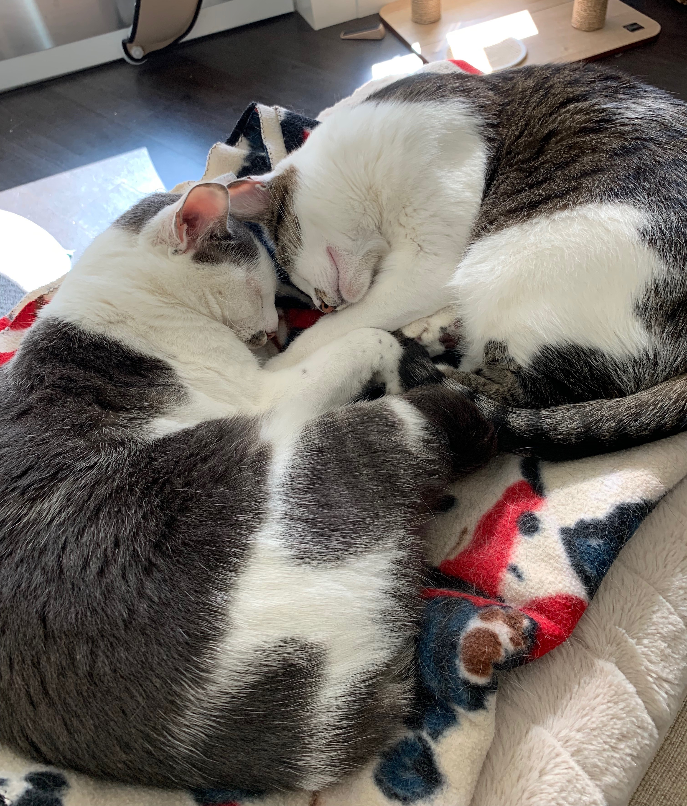

My Portfolio: A page about me and my work at Epicodus
Written by Kate Kelly
About Me
Greetings! Thank you for visiting my first portfolio page. My name is Kate Kelly and I am in the part-time course at Epicodus. This entire coding experience has all been very new to me, however with each passing day I learn so many new and interesting things that any fears I had in the beginning of this course have turned into only excitement and joy. If you have any questions for me after reviewing my work shared below, feel free to email me here!
You might ask why someone who has zero experience with coding would want to start a coding course? Well, my career thus far has been mainly hospitality based. I have been so fortunate to work in beautiful hotels and social clubs working with guests and gaining experience across the industry. With that said, after 10 years in the hospitality industry I was ready for a change. Currently I work with hundreds of software engineers and Product Managers at Vacasa, a vacation rental management company based in Portland. My colleagues have been a huge inspiration to me during this journey and I have been able to consult many of them along the way! Also, not only is the demand for software engineers incredibly high, as a woman I am hopeful that my experiences will encourage other women to dive into the male-dominated software engineering world to help create more diversity.
My Favorite Things
Family

There are a few things I love most in this world, the first being my family. In the picture adjacent you will see my immediate family and my husband's family at our wedding last year in Dublin, Ireland, where my husband was born and raised. From left to right, here are their names and relation to me:
- Frank Kelly, My Father-In-Law
- Shauna Kelly, My Sister-In-Law
- Anne Kelly, My Mother-In-Law
- Ian Kelly, My Husband
- Me!
- Joanne Griffin, My Mom
- Paul Griffin, My Dad
- Gillian Griffin, My Sister
- Lindsey Griffin, My Sister
- Kelsey Griffin, My Sister
- Zac York, Kelsey's fiance
Pets
The other loves of my life are my cats, Abbey (L) and Quin(R), shown here. Supposedly they are sister cats (they look very similar so I think that they are) and were rescued in the Portland area in laste 2016. We adopted them in February of 2017 (on Valentines Day!) and they bring my husband and I so much joy. Not to mention, cats are incredibly easy to take care of which works well for our lifestyle. My sisters and I love to rescue and foster cats and kittens in the area; there are so many that need homes, we do our best to help when we can!
Projects
Over the last three weeks our class has worked on numerous projects to help us get a hands-on experience to learn HTML, CSS and GitHub. While working in pairs we have created many projects to showcase our knowledge on the topic. I have listed the projects stored in my GitHub repository for your review below:
- hello-world - Reviewed basic commands like, mkdir, touch, cd, cd .., and ls and created my y first html document.
- goodbye - Created an html document and practiced cascading html tags like h,p, ul, and l.
- my-blog - Created website using Markdown.
- my-favorite-things - Created an HTML doc using h, p, ul, li tags and pushed to GitHub
- My-cats - More practice with tags in an html document.
- Cookie-Recipe (Clone) - Learned how to clone a GitHub repo, change the contents, and post to our own GitHub profile.
- my-first-webpage - Created an HTML document, added CSS styling, images, and a README.md to GutHub repo.
- Vacasaraptors - HTML document with an index page, CSS styling, and images.
- Travis-Scott - Created an HTML document with extensive CSS styling to include padding, margins, and borders.
- adopt - Created an HTML document to house links to multiple pages for different adoptable pets with extensive CSS styling.
- my-next-vacation - HTML document that includes bootstrap styling
- wikipedia - Working in pairs to recreate the Wikipedia homepage using columns, rows, CSS and bootstrap CSS styling.